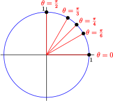
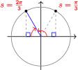
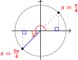
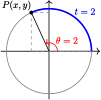
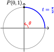
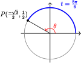
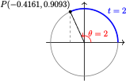
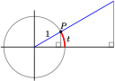
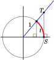
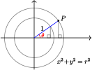

Section 6.2 The Circular Functions
¶
Subsection Trigonometric Functions of Angles in Radians
Measuring angles in radians has other applications besides calculating arclength, and we will need to evaluate trigonometric functions of angles in radians. The sine, cosine, or tangent of a particular angle is the same whether the angle is measured in radians or in degrees.
For example, \(\dfrac{\pi}{3}\) radians is the same as \(60\degree\text{,}\) because \(\dfrac{\pi}{3} \cdot \dfrac{180\degree}{\pi} = 60\degree\text{,}\) so
\begin{equation*}
\sin \dfrac{\pi}{3} = \sin 60\degree = \dfrac{\sqrt{3}}{2}
\end{equation*}
However, we don't have to convert radians to degrees in order to evaluate trig ratios; your calculator can give you the trigonometric function values for angles expressed in radians. First, change the calculator setting from Degree mode to Radian mode. Then enter
\begin{equation*}
\boxed{\text{SIN}}~(\pi / 3)
\end{equation*}
and the calculator will return \(0.8660254038\text{.}\) You can check that this number is a decimal approximation for \(\dfrac{\sqrt{3}}{2}\text{.}\)
Example 6.15
Use your calculator to find the sine and cosine of the following angles in radians. Round your answers to four decimal places.
- \(\theta = \dfrac{7\pi}{4}\)
- \(\theta = 3.5\)
Solution
- With your calculator in radian mode, enter \(\boxed{\text{COS}}~(7\pi/4)\) and \(\boxed{\text{SIN}}~ (7\pi/4)\) to find \begin{align*} \cos (7\pi/4) \amp = 0.7071067812\\ \sin (7\pi/4) \amp = -0.7071067812\\ \end{align*} Rounding to four decimal places gives \(\cos \dfrac{7\pi}{4} = 0.7071\) and \(\sin \dfrac{7\pi}{4} = -0.7071\text{.}\)
- Your calculator will give you the values \begin{align*} \cos (3.5) \amp = -0.9364566873\\ \sin (3.5) \amp = -0.3507832277\\ \end{align*} Rounding to four places, we have \(\cos (3.5) = -0.9365\) and \(\sin (3.5) = -0.3508\text{.}\) Note that 3.5 radians is a third-quadrant angle, so the signs of the trig values make sense.
Checkpoint 6.17
Use your calculator to find the tangents of the following angles in radians. Round your answers to four decimal places.
- \(\theta = \dfrac{5\pi}{12}\)
- \(\theta = 5.2\)
Subsection The Special Values
Many applications of trigonometric functions, including most of the periodic functions we encountered in Chapter 5, use radians for input values, rather than degrees. For this reason, it is important to know the trig values for the special angles, which you learned in degrees in Chapter 2, when the angles are given in radians.
| Degrees |
Radians |
Sine |
Cosine |
Tangent |
| \(0\degree\) |
\(0\) |
\(0\) |
\(1\) |
\(0\) |
| \(30\degree\) |
\(\dfrac{\pi}{6}\) |
\(\dfrac{1}{2}\) |
\(\dfrac{\sqrt{3}}{2}\) |
\(\dfrac{1}{\sqrt{3}}\) |
| \(45\degree\) |
\(\dfrac{\pi}{4}\) |
\(\dfrac{1}{\sqrt{2}}\) |
\(\dfrac{1}{\sqrt{2}}\) |
\(1\) |
| \(60\degree\) |
\(\dfrac{\pi}{3}\) |
\(\dfrac{\sqrt{3}}{2}\) |
\(\dfrac{1}{2}\) |
\(\sqrt{3}\) |
| \(90\degree\) |
\(\dfrac{\pi}{2}\) |
\(1\) |
\(0\) |
undefined |

You should memorize these function values, and be able to use them to find trig values for the special angles in all four quadrants.
Recall that we use reference angles to define the trigonometric ratios for angles greater than \(90\degree\text{.}\) (See Section 4.1 to review reference angles.) The figure below shows how to calculate reference angles in radians.
Activity 6.1 Radians
-
Use the unit circle to estimate the sine, cosine, and tangent of each arc of given length.
- \(0.6\)
- \(2.3\)
- \(3.5\)
- \(5.3\)
-
Use the unit circle to estimate two solutions to each equation.
- \(\cos t = 0.3\)
- \(\sin t = 0.7\)
-
Sketch the angle on the unit circle. Find the reference angle in radians, rounded to two decimal places, and sketch the reference triangle.
- \(1.8\)
- \(5.2\)
- \(3.7\)
-
Give a decimal approximation to two places for each angle, then the degree measure of each.
| Radians |
\(0\) |
\(\dfrac{\pi}{12}\) |
\(\dfrac{\pi}{6}\) |
\(\dfrac{\pi}{4}\) |
\(\dfrac{\pi}{3}\) |
\(\dfrac{5\pi}{12}\) |
\(\dfrac{\pi}{2}\) |
\(\dfrac{7\pi}{12}\) |
\(\dfrac{2\pi}{3}\) |
\(\dfrac{3\pi}{4}\) |
\(\dfrac{5\pi}{6}\) |
\(\dfrac{11\pi}{12}\) |
\(\pi\) |
| Decimal Approx. |
\(\hphantom{0000}\) |
\(\hphantom{0000}\) |
\(\hphantom{0000}\) |
\(\hphantom{0000}\) |
\(\hphantom{0000}\) |
\(\hphantom{0000}\) |
\(\hphantom{0000}\) |
\(\hphantom{0000}\) |
\(\hphantom{0000}\) |
\(\hphantom{0000}\) |
\(\hphantom{0000}\) |
\(\hphantom{0000}\) |
\(\hphantom{0000}\) |
| Degrees |
\(\hphantom{0000}\) |
\(\hphantom{0000}\) |
\(\hphantom{0000}\) |
\(\hphantom{0000}\) |
\(\hphantom{0000}\) |
\(\hphantom{0000}\) |
\(\hphantom{0000}\) |
\(\hphantom{0000}\) |
\(\hphantom{0000}\) |
\(\hphantom{0000}\) |
\(\hphantom{0000}\) |
\(\hphantom{0000}\) |
\(\hphantom{0000}\) |
| Radians |
\(\pi\) |
\(\dfrac{13\pi}{12}\) |
\(\dfrac{7\pi}{6}\) |
\(\dfrac{5\pi}{4}\) |
\(\dfrac{4\pi}{3}\) |
\(\dfrac{17\pi}{12}\) |
\(\dfrac{3\pi}{2}\) |
\(\dfrac{19\pi}{12}\) |
\(\dfrac{5\pi}{3}\) |
\(\dfrac{7\pi}{4}\) |
\(\dfrac{11\pi}{6}\) |
\(\dfrac{23\pi}{12}\) |
\(2\pi\) |
| Decimal Approx. |
\(\hphantom{0000}\) |
\(\hphantom{0000}\) |
\(\hphantom{0000}\) |
\(\hphantom{0000}\) |
\(\hphantom{0000}\) |
\(\hphantom{0000}\) |
\(\hphantom{0000}\) |
\(\hphantom{0000}\) |
\(\hphantom{0000}\) |
\(\hphantom{0000}\) |
\(\hphantom{0000}\) |
\(\hphantom{0000}\) |
\(\hphantom{0000}\) |
| Degrees |
\(\hphantom{0000}\) |
\(\hphantom{0000}\) |
\(\hphantom{0000}\) |
\(\hphantom{0000}\) |
\(\hphantom{0000}\) |
\(\hphantom{0000}\) |
\(\hphantom{0000}\) |
\(\hphantom{0000}\) |
\(\hphantom{0000}\) |
\(\hphantom{0000}\) |
\(\hphantom{0000}\) |
\(\hphantom{0000}\) |
\(\hphantom{0000}\) |
-
On the unit circle above, plot the endpoint of each arc in standard position.
- \(\dfrac{\pi}{3}\)
- \(\dfrac{7\pi}{6}\)
- \(\dfrac{7\pi}{4}\)
Example 6.18
Give exact values for the following.
- \(\tan \dfrac{2\pi}{3}\)
- \(\cos \dfrac{5\pi}{4}\)
Solution
The reference angle for \(\dfrac{2\pi}{3}\) is \(\pi - \dfrac{2\pi}{3} = \dfrac{\pi}{3}\text{,}\) and the tangent is negative in the second quadrant. (See the figure at right.) Thus,
\begin{equation*}
\tan \dfrac{2\pi}{3} = -\tan \dfrac{\pi}{3} = -\sqrt{3}
\end{equation*}

The reference angle for \(\dfrac{5\pi}{4}\) is \(\dfrac{5\pi}{4} - \pi = \dfrac{\pi}{4}\text{,}\) and the cosine is negative in the third quadrant, so
\begin{equation*}
\cos \dfrac{5\pi}{4} = - \cos \dfrac{\pi}{4} = \dfrac{-1}{\sqrt{2}}
\end{equation*}
See the figure at right.

Checkpoint 6.20
Give exact values for the following.
- \(\sin \dfrac{5\pi}{6}\)
- \(\tan \dfrac{7\pi}{4}\)
Subsection Sine and Cosine of Real Numbers
In Section 6.1 we derived the arclength formula, \(s = r\theta\text{,}\) where \(\theta\) is measured in radians, and observed that, on a unit circle where \(r = 1\text{,}\) the measure of a positive angle in radians is equal to the length of the arc it spans. This is an important observation, because it allows us to define the sine and cosine as functions of real numbers, instead of as functions of angles.
Consider the unit circle shown at right, and the angle \(\theta\) determined by the arc of length \(t\text{.}\) The radian measure of \(\theta\) is the same as the length \(t\) of the arc. (For example, in this figure \(\theta = t = 2\text{.}\))

Sine and Cosine of Real Numbers
We define the trigonometric functions of the number \(t\) by
\begin{equation*}
\cos t = \cos \theta ~~~~\text{and} ~~~~ \sin t = \sin \theta
\end{equation*}
where \(t\) is the length of the arc subtended by an angle \(\theta\text{,}\) measured in radians, on a unit circle.
We can think of the definition this way: to find the sine or cosine of a real number \(t\text{,}\) we draw an arc of length \(t\) on a unit circle, and then find the sine or cosine of the angle \(\theta\) determined by the arc.
Example 6.22
The sunset time in Stockholm, Sweden, on the \(n\)th day of the year can be modeled by
\begin{equation*}
T = 3.11 \sin (0.017n - 1.38) + 6.03
\end{equation*}
where \(T\) is given in hours after noon. Find the sunset time on January 1 (day \(n = 1\)) and on July 1 (day \(n = 182\)).
Solution
Evaluate the function for \(n = \alert{1}\) to find
\begin{equation*}
T = 3.11 \sin (0.017(\alert{1}) - 1.38) + 6.03 = 2.99
\end{equation*}
On January 1, sunset in Stockholm occurs about 2.99 hours after noon, or at 2:59 pm.
Evaluate the function at \(n = \alert{182}\) to find
\begin{equation*}
T = 3.11 \sin (0.017(\alert{182}) - 1.38) + 6.03 = 9.11
\end{equation*}
On July 1, sunset occurs about 9.11 hours after noon, or at 9:07 pm. (Actually, 10:07 pm, because of daylight savings time.)
Checkpoint 6.23
Variable stars are important in astronomy because they are used to estimate distances. Their magnitude, or brightness, varies periodically and can be modeled by trigonometric functions. The star T Herculis reached its maximum magnitude on December 27, 2004, and \(t\) days later its magnitude is approximately
\begin{equation*}
M = 10.2 - 2.2 \cos(0.038t)
\end{equation*}
- What was the magnitude of T Herculis on December 27, 2004?
- What was the magnitude of T Herculis be on December 27, 2006 (730 days later)?
Subsection Coordinates on a Unit Circle
There is another useful connection between the unit circle and the trigonometric functions. Consider an arc of length \(t\) in standard position on a unit circle, and the angle \(\theta\) spanned by the arc. Because \(r = 1\) on a unit circle,
\begin{equation*}
\cos \theta = \dfrac{x}{r} = \dfrac{x}{1}~~~~\text{and}~~~~ \sin \theta = \dfrac{y}{r} = \dfrac{y}{1}
\end{equation*}
But because \(\cos t = \cos \theta\) and \(\sin t = \sin \theta\text{,}\) we have
\begin{equation*}
\cos t = x ~~~~ \text{and} ~~~~ \sin t = y
\end{equation*}
We have established the following result for the sine and cosine of a real number \(t\text{.}\)
Coordinates on a Unit Circle
The coordinates of the point \(P\) determined by an arc of length \(t\) in standard position on a unit circle are
\begin{equation*}
(x, y) = (\cos t, \sin t)
\end{equation*}
We sometimes call the trigonometric functions of arclength, \(\sin t\) and \(\cos t\text{,}\) the circular functions, because they are defined by the coordinates of points on a unit circle.
Example 6.24
Find the coordinates of the terminal point, \(P\text{,}\) of an arc of length \(t\) starting at \((1,0)\) on a unit circle.
- \(t = \dfrac{\pi}{2}\)
- \(t = \dfrac{5\pi}{6}\)
Solution
-
On a unit circle, the coordinates of \(P\) are \((\cos \dfrac{\pi}{2}, \sin \dfrac{\pi}{2})\text{,}\) so
\begin{equation*}
x = \cos \dfrac{\pi}{2} = 0~~~\text{and}~~~ y = \sin \dfrac{\pi}{2} = 1
\end{equation*}
The coordinates of \(P\) are \((0,1)\text{,}\) as shown at right.

(We could also observe that an arc of length \(\dfrac{\pi}{2}\) is one quarter of a unit circle, so the point \(P\) sits at the twelve o'clock position on the circle.)
The coordinates of \(P\) are \((\cos \dfrac{5\pi}{6}, \sin \dfrac{5\pi}{6})\text{,}\) so \begin{align*} x \amp= \cos \dfrac{5\pi}{6} = \dfrac{-\sqrt{3}}{2}~~~\\ y \amp= \sin \dfrac{5\pi}{6} = \dfrac{1}{2}\\ \end{align*} Thus, the coordinates of \(P\) are \((\dfrac{-\sqrt{3}}{2},\dfrac{1}{2})\text{,}\) as shown at right.

Checkpoint 6.25
Find the coordinates of the terminal point, \(P\text{,}\) of an arc of length \(t\) starting at \((1,0)\) on a unit circle.
- \(t = \pi\)
- \(t = \dfrac{\pi}{3}\)
Subsection The Tangent Function
We can also define the tangent function for real numbers. Let \(P(x,y)\) be the terminal point of an arc of length \(t\) in standard position on a unit circle. Then
\begin{equation*}
\tan t = \dfrac{y}{x}
\end{equation*}
Of course, this definition agrees with our earlier definition of the tangent function for angles, because the point \(P\) lies on the terminal side of the angle \(\theta = t\) radians.

For example, we saw earlier that, rounded to four decimal places,
\begin{equation*}
\cos 2 = -0.4161~~~~\text{and} ~~~~ \sin 2 = 0.9093
\end{equation*}
so the coordinates of point \(P\) on the unit circle in the figure above are \((-0.4161, 0.9093)\text{.}\) Therefore,
\begin{equation*}
\tan 2 = \dfrac{0.9093}{-0.4161} = -2.1853
\end{equation*}
You can set your calculator in radian mode to verify that, to three decimal places,
\begin{equation*}
\boxed{\text{TAN}} ~2 = -2.185
\end{equation*}
We now have the following definitions for the circular functions of real numbers.
The Circular Functions
Let \(P\) be the terminal point of an arc of length \(t\) in standard position on a unit circle. The circular functions of \(t\) are defined by
\begin{align*} \cos t \amp = x\\ \sin t \amp = y\\ \tan t \amp = \dfrac{y}{x},~~x \not= 0\\ \end{align*}
Example 6.26
Use the graph of the unit circle shown below to estimate \(\cos 2.5,~\sin 2.5\text{,}\) and \(\tan 2.5\text{.}\)
Solution
The circle is scaled in units of 0.1 radians, and an arc of 2.5 radians in standard position has its terminal point, \(P\text{,}\) in the second quadrant. The coordinates of \(P\) are approximately \((-0.8,0.6)\text{,}\) so we have
\begin{equation*}
\cos 2.5 = -0.8~~~~\text{and}~~~~\sin 2.5 = 0.6
\end{equation*}
To find \(\tan 2.5\text{,}\) we calculate \(\dfrac{y}{x}\text{.}\)
\begin{equation*}
\tan 2.5 = \dfrac{y}{x} = \dfrac{0.6}{-0.8} = -0.75
\end{equation*}
Checkpoint 6.27
Use the graph of the unit circle in the previous example to estimate \(\cos 4.2,~ \sin 4.2\text{,}\) and \(\tan 4.2\text{.}\)
Subsection Algebra Refresher
Subsubsection Exercises
1
- \(\dfrac{2}{3} + \dfrac{1}{6}\)
- \(\dfrac{2x}{3} + \dfrac{x}{6}\)
2
- \(\dfrac{3}{4} - \dfrac{5}{8}\)
- \(\dfrac{3n}{4} - \dfrac{5n}{8}\)
3
- \(2 - \dfrac{3}{4}\)
- \(2b - \dfrac{3b}{4}\)
4
- \(1 + \dfrac{3}{8}\)
- \(m + \dfrac{3m}{8}\)
5
- \(\dfrac{5}{6} - \dfrac{7}{6}\)
- \(\dfrac{5q}{6} - \dfrac{7q}{6}\)
6
- \(\dfrac{2}{3} - \dfrac{5}{3}\)
- \(\dfrac{2p}{3} - \dfrac{5p}{3}\)
Subsubsection Answers to 6.2 Exercises
- \(3.7321\)
- \(-1.8856\)
- \(\dfrac{1}{2}\)
- \(-1\)
- \(8\)
- \(12.09\)
- \((-1,0)\)
- \((\dfrac{1}{2},\dfrac{\sqrt{3}}{2})\)
- \(-0.49,~-0.87,~1.78\)
Subsubsection Algebra Refresher Answers
- \(\dfrac{5}{6}\)
- \(\dfrac{5x}{6}\)
- \(\dfrac{1}{8}\)
- \(\dfrac{n}{8}\)
- \(\dfrac{5}{4}\)
- \(\dfrac{5b}{4}\)
- \(\dfrac{11}{8}\)
- \(\dfrac{11m}{8}\)
- \(\dfrac{-1}{6}\)
- \(\dfrac{-q}{6}\)
- \(-1\)
- \(-p\)
Subsection Section 6.2 Summary
Subsubsection Concepts
- The sine, cosine, or tangent of a particular angle is the same whether the angle is measured in radians or in degrees.
-
You should memorize the trig values of the special angles in radians.
| Degrees |
Radians |
Sine |
Cosine |
Tangent |
| \(0\degree\) |
\(0\) |
\(0\) |
\(1\) |
\(0\) |
| \(30\degree\) |
\(\dfrac{\pi}{6}\) |
\(\dfrac{1}{2}\) |
\(\dfrac{\sqrt{3}}{2}\) |
\(\dfrac{1}{\sqrt{3}}\) |
| \(45\degree\) |
\(\dfrac{\pi}{4}\) |
\(\dfrac{1}{\sqrt{2}}\) |
\(\dfrac{1}{\sqrt{2}}\) |
\(1\) |
| \(60\degree\) |
\(\dfrac{\pi}{3}\) |
\(\dfrac{\sqrt{3}}{2}\) |
\(\dfrac{1}{2}\) |
\(\sqrt{3}\) |
| \(90\degree\) |
\(\dfrac{\pi}{2}\) |
\(1\) |
\(0\) |
undefined |
- To find the sine or cosine of a real number \(t\text{,}\) we draw an arc of length \(t\) on a unit circle, and then find the sine or cosine of the angle \(\theta\) determined by the arc.
Coordinates on a Unit Circle
The coordinates of the point \(P\) determined by an arc of length \(t\) in standard position on a unit circle are
\begin{equation*}
(x, y) = (\cos t, \sin t)
\end{equation*}
The Circular Functions
Let \(P\) be the terminal point of an arc of length \(t\) in standard position on a unit circle. The circular functions of \(t\) are defined by
\begin{align*} \cos t \amp = x\\ \sin t \amp = y\\ \tan t \amp = \dfrac{y}{x},~~x \not= 0\\ \end{align*}
Subsubsection Study Questions
-
Write each statement using decimal approximations to four places.
- \(\cos \dfrac{\pi}{6} = \dfrac{\sqrt{3}}{2}\)
- \(\sin \dfrac{5\pi}{4} = \dfrac{-1}{\sqrt{2}}\)
-
Sketch a figure on a unit circle to illustrate each equation.
- \(\sin \dfrac{3\pi}{4} = 0.7071\)
- \(\cos 2.5 = -0.8011\)
- Write down the multiples of \(\dfrac{\pi}{12}\) from \(0\) to \(2\pi\text{.}\) Reduce each fraction.
- On a unit circle, sketch arcs in standard position with the following lengths.
\begin{equation*}
s = \dfrac{\pi}{2},~s = \dfrac{3\pi}{4},~s = \dfrac{\pi}{3},~s = \dfrac{2\pi}{3}
\end{equation*}
Subsubsection Skills
- Know the trigonometric function values for the special angles in radians #1-4, 46-48
- Use a unit circle to find trig values #5-30, 45-58
- Find reference angles in radians #33-45
- Evaluate trigonometric expressions #31-32, 49-54
- Find coordinates on a unit circle #55-60, 67-68
- Find an angle with a given terminal point on a unit circle #61-66
- Use the tangent ratio to find slope #69-74
- Find coordinates on a circle of radius #77-80
Subsection Homework 6.2
¶
For Problems 1–4, each point on the unit circle is the terminal point of an angle in standard position. Give exact values for the radian measure, \(t\text{,}\) of the angle, and the coordinates \((x,y)\) of the point.
1
| \(\hphantom{0000}\) |
a |
b |
c |
d |
| \(t\) |
\(\hphantom{0000}\) |
\(\hphantom{0000}\) |
\(\hphantom{0000}\) |
\(\hphantom{0000}\) |
| \(x\) |
\(\hphantom{0000}\) |
\(\hphantom{0000}\) |
\(\hphantom{0000}\) |
\(\hphantom{0000}\) |
| \(y\) |
\(\hphantom{0000}\) |
\(\hphantom{0000}\) |
\(\hphantom{0000}\) |
\(\hphantom{0000}\) |
Answer
| \(\hphantom{0000}\) |
a |
b |
c |
d |
| \(t\) |
\(\dfrac{\pi}{4}\) |
\(\dfrac{3\pi}{4}\) |
\(\dfrac{5\pi}{4}\) |
\(\dfrac{7\pi}{4}\) |
| \(x\) |
\(\dfrac{1}{\sqrt{2}}\) |
\(\dfrac{-1}{\sqrt{2}}\) |
\(\dfrac{-1}{\sqrt{2}}\) |
\(\dfrac{1}{\sqrt{2}}\) |
| \(y\) |
\(\dfrac{1}{\sqrt{2}}\) |
\(\dfrac{1}{\sqrt{2}}\) |
\(\dfrac{-1}{\sqrt{2}}\) |
\(\dfrac{-1}{\sqrt{2}}\) |
2
| \(\hphantom{0000}\) |
a |
b |
c |
d |
| \(t\) |
\(\hphantom{0000}\) |
\(\hphantom{0000}\) |
\(\hphantom{0000}\) |
\(\hphantom{0000}\) |
| \(x\) |
\(\hphantom{0000}\) |
\(\hphantom{0000}\) |
\(\hphantom{0000}\) |
\(\hphantom{0000}\) |
| \(y\) |
\(\hphantom{0000}\) |
\(\hphantom{0000}\) |
\(\hphantom{0000}\) |
\(\hphantom{0000}\) |
3
| \(\hphantom{0000}\) |
a |
b |
c |
d |
| \(t\) |
\(\hphantom{0000}\) |
\(\hphantom{0000}\) |
\(\hphantom{0000}\) |
\(\hphantom{0000}\) |
| \(x\) |
\(\hphantom{0000}\) |
\(\hphantom{0000}\) |
\(\hphantom{0000}\) |
\(\hphantom{0000}\) |
| \(y\) |
\(\hphantom{0000}\) |
\(\hphantom{0000}\) |
\(\hphantom{0000}\) |
\(\hphantom{0000}\) |
Answer
| \(\hphantom{0000}\) |
a |
b |
c |
d |
| \(t\) |
\(\dfrac{\pi}{3}\) |
\(\dfrac{2\pi}{3}\) |
\(\dfrac{4\pi}{3}\) |
\(\dfrac{5\pi}{3}\) |
| \(x\) |
\(\dfrac{1}{2}\) |
\(\dfrac{-1}{2}\) |
\(\dfrac{-1}{2}\) |
\(\dfrac{1}{2}\) |
| \(y\) |
\(\dfrac{\sqrt{3}}{2}\) |
\(\dfrac{\sqrt{3}}{2}\) |
\(\dfrac{-\sqrt{3}}{2}\) |
\(\dfrac{-\sqrt{3}}{2}\) |
4
| \(\hphantom{0000}\) |
a |
b |
c |
d |
| \(t\) |
\(\hphantom{0000}\) |
\(\hphantom{0000}\) |
\(\hphantom{0000}\) |
\(\hphantom{0000}\) |
| \(x\) |
\(\hphantom{0000}\) |
\(\hphantom{0000}\) |
\(\hphantom{0000}\) |
\(\hphantom{0000}\) |
| \(y\) |
\(\hphantom{0000}\) |
\(\hphantom{0000}\) |
\(\hphantom{0000}\) |
\(\hphantom{0000}\) |
For Problems 5–8, use the unit circle to estimate the sine, cosine, and tangent of each arc of given length.
5
- \(0.4\)
- \(1.2\)
- \(2\)
Answer
- \(\sin 0.4 \approx 0.39,~ \cos 0.4 \approx 0.92,~ \tan 0.4 \approx 0.42\)
- \(\sin 1.2 \approx 0.93,~ \cos 1.2 \approx 0.36,~ \tan 1.2 \approx 2.6\)
- \(\sin 2 \approx 0.91,~ \cos 2 \approx -0.42,~ \tan 2 \approx -2.2\)
6
- \(0.8\)
- \(2.6\)
- \(4\)
7
- \(2.8\)
- \(3.5\)
- \(5\)
Answer
- \(\sin 2.8 \approx 0.33,~ \cos 2.8 \approx -0.94,~ \tan 2.8 \approx -0.36\)
- \(\sin 3.5 \approx -0.35,~ \cos 3.5 \approx -0.94,~ \tan 3.5 \approx 0.37\)
- \(\sin 5 \approx -0.96,~ \cos 5 \approx 0.28,~ \tan 5 \approx -3.3\)
8
- \(3\)
- \(4.3\)
- \(5.5\)
For Problems 9–14, use the unit circle to estimate two numbers with the given trig value.
9
\(\cos t = 0.3\)
Answer\(t \approx 1.27\)\(t \approx 5\)
10
\(\sin t = 0.1\)
11
\(\sin t = -0.7\)
Answer\(t \approx 3.92\)\(t \approx 5.5\)
12
\(\cos t = -0.6\)
13
\(\tan t = \dfrac{-4}{9}\)
Answer\(t \approx 2.72\)\(t \approx 5.87\)
14
\(\tan t = \dfrac{8}{6}\)
Each of Problems 13–20 describes an arc in standard position on the unit circle. In which quadrant does the terminal point of the arc lie?
15
\(\sin s \gt 0,~ \cos s \lt 0\)
16
\(\sin s \lt 0,~ \cos s \gt 0\)
17
\(\cos t \lt 0,~ \tan t \lt 0\)
18
\(\cos t \gt 0,~ \tan t \lt 0\)
19
\(\sin x \lt 0,~ \tan x \gt 0\)
20
\(\sin x \gt 0,~ \tan x \lt 0\)
For Problems 21–26, without using a calculator, decide whether the quantity is positive or negative.
21
\(\cos 2.7\)
22
\(\sin 4.1\)
23
\(\tan 3.8\)
24
\(\tan 5.4\)
25
\(\sin 2.2\)
26
\(\cos 4.9\)
For Problems 27–30, place the trig values in order from smallest to largest. Use the figure to help you, but try not to use a calculator!
27
\(\sin 0.5,~ \sin 1.5,~ \sin 2.5,~ \sin 3.5\)
Answer\(\sin 3.5,~ \sin 0.5,~ \sin 2.5,~ \sin 1.5\)
28
\(\cos 1.6,~ \cos 2.6,~ \cos 3.6,~ \cos 5.6\)
29
\(\cos 2,~ \cos 3,~ \cos 4,~ \cos 5\)
Answer\(\cos 3,~ \cos 4,~ \cos 2,~ \cos 5\)
30
\(\sin 2.8,~ \sin 3.8,~ \sin 4.8,~ \sin 5.8\)
31
The sunrise time in Wellington, New Zealand, on the \(n\)th day of the year can be modeled by
\begin{equation*}
S = 1.93 \sin (0.016n - 1.13) + 6.14
\end{equation*}
where \(S\) is given in hours after midnight. Find the sunrise time on January 1 (day \(n = 1\)), April 1 (day \(n = 91\)), July 1 (day \(n = 182\)), and on October 1 (day \(n = 274\)).
AnswerJanuary 1: 4:24, April 1: 6:45, July 1: 8:02, October 1: 5:55
32
The variable star RT Cygni reached its maximum magnitude on May 22, 2004, and \(t\) days later its magnitude is given by
\begin{equation*}
M = 9.55 - 2.25 \cos (0.033t)
\end{equation*}
Find the magnitude of RT Cygni on days \(t = 0,~ t = 48,~ t = 95,~ t = 142,\) and \(t = 190\text{.}\) (Note that smaller values of \(M\) denote brighter magnitudes.)
For Problems 33–38, find the reference angle in radians, rounded to two decimal places.
33
\(1.8\)
34
\(4.9\)
35
\(-2.3\)
36
\(-6.0\)
37
\(9.4\)
38
\(7.1\)
For Problems 39–44, find the reference angle in radians, expressed as a multiple of \(\pi\text{.}\)
39
\(\dfrac{11\pi}{12}\)
40
\(\dfrac{11\pi}{8}\)
41
\(\dfrac{4\pi}{3}\)
42
\(\dfrac{7\pi}{6}\)
43
\(\dfrac{13\pi}{4}\)
44
\(\dfrac{8\pi}{3}\)
45
Find three angles in radians between \(0\) and \(2\pi\) with the given reference angle. Sketch all the angles on a unit circle.
- \(\dfrac{\pi}{6}\)
- \(\dfrac{\pi}{4}\)
- \(\dfrac{\pi}{3}\)
Answer
- \(\dfrac{5\pi}{6},~\dfrac{7\pi}{6},~\dfrac{11\pi}{6}\)
- \(\dfrac{3\pi}{4},~\dfrac{5\pi}{4},~\dfrac{7\pi}{4}\)
- \(\dfrac{2\pi}{3},~\dfrac{4\pi}{3},~\dfrac{5\pi}{3}\)
46
Complete the table.
| \(~\theta~\) |
\(~~~\sin \theta~~~\) |
\(~~~\cos \theta~~~\) |
\(~~~\tan \theta~~~\) |
| \(\dfrac{2\pi}{3}\) |
\(\hphantom{0000}\) |
\(\hphantom{0000}\) |
\(\hphantom{0000}\) |
| \(\dfrac{3\pi}{4}\) |
\(\hphantom{0000}\) |
\(\hphantom{0000}\) |
\(\hphantom{0000}\) |
| \(\dfrac{5\pi}{6}\) |
\(\hphantom{0000}\) |
\(\hphantom{0000}\) |
\(\hphantom{0000}\) |
47
Complete the table.
| \(~\theta~\) |
\(~~~\sin \theta~~~\) |
\(~~~\cos \theta~~~\) |
\(~~~\tan \theta~~~\) |
| \(\dfrac{7\pi}{6}\) |
\(\hphantom{0000}\) |
\(\hphantom{0000}\) |
\(\hphantom{0000}\) |
| \(\dfrac{5\pi}{4}\) |
\(\hphantom{0000}\) |
\(\hphantom{0000}\) |
\(\hphantom{0000}\) |
| \(\dfrac{4\pi}{3}\) |
\(\hphantom{0000}\) |
\(\hphantom{0000}\) |
\(\hphantom{0000}\) |
Answer
| \(~\theta~\) |
\(~~~\sin \theta~~~\) |
\(~~~\cos \theta~~~\) |
\(~~~\tan \theta~~~\) |
| \(\dfrac{7\pi}{6}\) |
\(\dfrac{-1}{2}\) |
\(\dfrac{-\sqrt{3}}{2}\) |
\(\dfrac{1}{\sqrt{3}}\) |
| \(\dfrac{5\pi}{4}\) |
\(\dfrac{-1}{\sqrt{2}}\) |
\(\dfrac{-1}{\sqrt{2}}\) |
\(1\) |
| \(\dfrac{4\pi}{3}\) |
\(\dfrac{-\sqrt{3}}{2}\) |
\(\dfrac{-1}{2}\) |
\(\sqrt{3}\) |
48
Complete the table.
| \(~\theta~\) |
\(~~~\sin \theta~~~\) |
\(~~~\cos \theta~~~\) |
\(~~~\tan \theta~~~\) |
| \(\dfrac{5\pi}{3}\) |
\(\hphantom{0000}\) |
\(\hphantom{0000}\) |
\(\hphantom{0000}\) |
| \(\dfrac{7\pi}{4}\) |
\(\hphantom{0000}\) |
\(\hphantom{0000}\) |
\(\hphantom{0000}\) |
| \(\dfrac{11\pi}{6}\) |
\(\hphantom{0000}\) |
\(\hphantom{0000}\) |
\(\hphantom{0000}\) |
For Problems 49–54, evaluate the expression exactly.
49
\(\cos \dfrac{\pi}{3} \sin \dfrac{\pi}{6}\)
50
\(\sin \dfrac{\pi}{4} \tan \dfrac{\pi}{3}\)
51
\(\tan \dfrac{5\pi}{6} + \tan \dfrac{7\pi}{4}\)
Answer\(-\dfrac{3+\sqrt{3}}{3}\)
52
\(\cos \dfrac{3\pi}{4} - \cos \dfrac{5\pi}{3}\)
53
\(\cos^2 (\dfrac{11\pi}{6}) - 3\cos \dfrac{11\pi}{6}\)
Answer\(\dfrac{3-6\sqrt{3}}{4}\)
54
\(2\sin \dfrac{4\pi}{3} - \sin^2 (\dfrac{4\pi}{3})\)
Starting at \((1,0)\text{,}\) you walk \(s\) units around a unit circle. For Problems 55–58, sketch a unit circle showing your position. What are your coordinates?
55
\(s = 2.5\)
Answer\((\cos 2.5,\sin 2.5) \approx (-0.8, 0.6)\)
56
\(s = 4.3\)
57
\(s = 8.5\)
Answer\((\cos 8.5, \sin 8.5) \approx (-0.6, 0.8)\)
58
\(s = 11\)
59
City Park features a circular jogging track of radius 1 mile, centered on the open-air bandstand. You start jogging on the track 1 mile due east of the bandstand and proceed counterclockwise. What are your coordinates, relative to the bandstand, when you have jogged five miles?
Answer\(\cos 5 \approx 0.28\) mi east, \(\sin 5 \approx -0.96\) mi north, or about 0.96 mi south
60
Silver Reservoir is a circular man-made lake of radius 1 kilometer. If you start at the easternmost point on the reservoir and walk counterclockwise for 4 kilometers, how far south of your intial position are you?
For Problems 61–66, find the angle in radians between \(0\) and \(2\pi\) determined by the terminal point on the unit circle. Round your answer to hundredths.
61
\((-0.1782, 0.9840)\)
62
\((-0.8968, -0.4425)\)
63
\((0.8855, -0.4646)\)
64
\((0.9801, 0.1987)\)
65
\((-0.7659, -0.6430)\)
66
\((0.9602, -0.2794)\)
67
- Sketch a unit circle and the line \(y = x\text{.}\) Find the coordinates of the two points where the line and the circle intersect.
- State your answers to part (a) using trigonometric functions.
Answer
-
Intersections: \((\dfrac{1}{\sqrt{2}},\dfrac{1}{\sqrt{2}})\) and \((\dfrac{-1}{\sqrt{2}},\dfrac{-1}{\sqrt{2}})\)
- \((\cos\dfrac{\pi}{4},\sin\dfrac{\pi}{4})\) and \((\cos\dfrac{5\pi}{4},\sin\dfrac{5\pi}{4})\)
68
- Sketch a unit circle and the line \(y = -x\text{.}\) Find the coordinates of the two points where the line and the circle intersect.
- State your answers to part (a) using trigonometric functions.
69
- Sketch a line that passes through the origin and the point \((8,3)\text{.}\) What is the slope of the line?
- What is the angle of inclination of the line in radians, measured from the positive \(x\)-axis?
Answer
-
\(m = \dfrac{3}{8}\)
- \(\tan^{-1}(\dfrac{3}{8})\approx 0.3588\)
70
- Sketch a line that passes through the origin and the point \((3,8)\text{.}\) What is the slope of the line?
- What is the angle of inclination of the line in radians, measured from the positive \(x\)-axis?
For Problems 71–74, find an equation for the line with the given angle of inclination, passing through the given point. (See Section 4.3 to review angle of inclination.)
71
\(\alpha = \dfrac{\pi}{3},~ (4,2)\)
Answer\(y - 2 = \sqrt{3}(x - 4)\)
72
\(\alpha = \dfrac{5\pi}{6},~ (-6,3)\)
73
\(\alpha = 2.4,~ (5,-8)\)
Answer\(y + 8 = (\tan 2.4)((x - 5)\)\(y + 8 = -0.916(x - 5)\)
74
\(\alpha = 0.6,~ (-2,-3)\)
75
Use similar triangles to show that the coordinates of point \(P\) on the unit circle shown at right are \((\cos t, \sin t)\text{.}\)

AnswerAny point \((x,y)\) on the terminal side of \(\theta\) satisfies \(\cos \theta = \dfrac{x}{r},~ \sin \theta = \dfrac{y}{r}\text{.}\) For the point \(P\) where \(r = 1,~\cos \theta = x,~\sin \theta = y\text{.}\) The arc of length \(t\) is spanned by an angle \(\theta\) in standard position. Because arclength is \(r\theta\) and \(r = 1,~ t = \theta,\) so \(x = \cos t,~ y = \sin t\text{.}\)
76
Use similar triangles to show that \(ST = \tan t\text{.}\)

Use the results of Problem 77 for for Problems 78–80.
77
Use similar triangles to show that the coordinates of a point \(P\) determined by angle \(\theta\) on a circle of radius \(r\) are \(x = r \cos \theta,~ y = r\sin \theta\text{.}\) (See the figure at right.)

AnswerThe two right triangles shown are similar, so their sides are proportional. The hypotenuse of the large triangle is \(r\) times the hypotenuse of the small triangle, so the two legs of the large triangle must be \(r\) times the legs of the small triangle. Thus, because the coordinates of the vertex on the unit circle are \((\cos \theta, \sin \theta)\text{,}\) the coordinates of \(P\) must be \((r\cos \theta, r\sin \theta)\text{.}\)
78
The Astrodome in Houston has a diameter of 710 feet. If you start at the easternmost point and walk counterclockwise around its perimeter for a distance of 250 feet, how far north of your starting point are you?
79
The Barringer meteor crater near Winslow, Arizona is 1182 meters in diameter. You start at the easternmost point on the rim of the crater and walk counterclockwise around the edge. After walking for 1 kilometer, what is your position relative to your starting point
80
One of the most intriguing features of Stonehenge is the position of the four Station Stones.
They form the corners of a rectangle inscribed in the Aubrey Circle on the perimeter of the henge, which has diameter 288 feet. A line from the center of the circle and perpendicular to the long edge of the rectangle points through the Slaughter Stones at the entrance of the henge and out to the Heel Stone. If you stood in the center of the circle on the summer solstice, you would see the sun rise directly over the Heel Stone.
- The sun rises \(48.6\degree\) east of north on the summer solstice at Stonehenge. If the positive \(y\)-axis points north, find the coordinates of the henge entrance relative to its center.
- The northernmost station stone is located \(66.6\degree\) of arc counterclockwise from the entrance. Find its coordinates relative to the center of the henge.